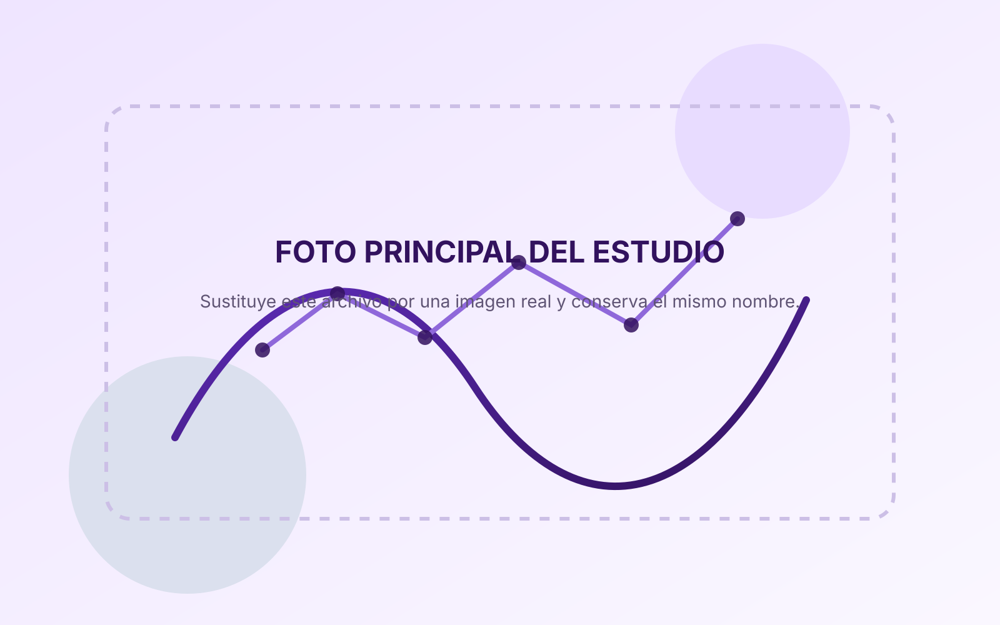
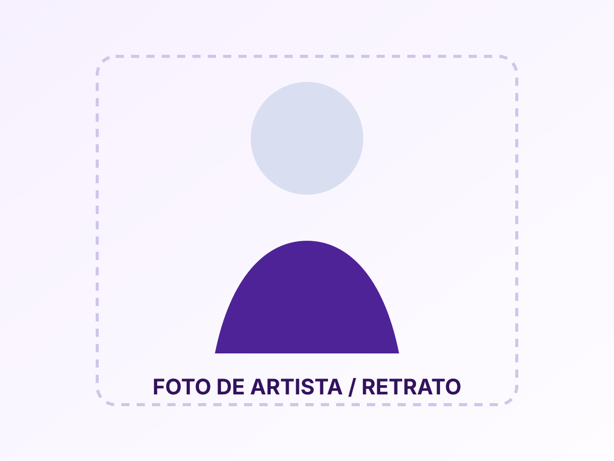
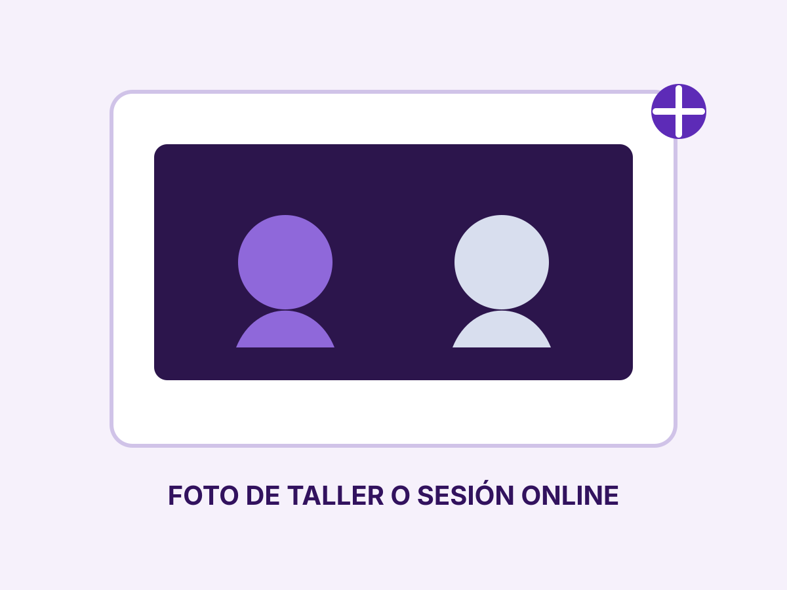
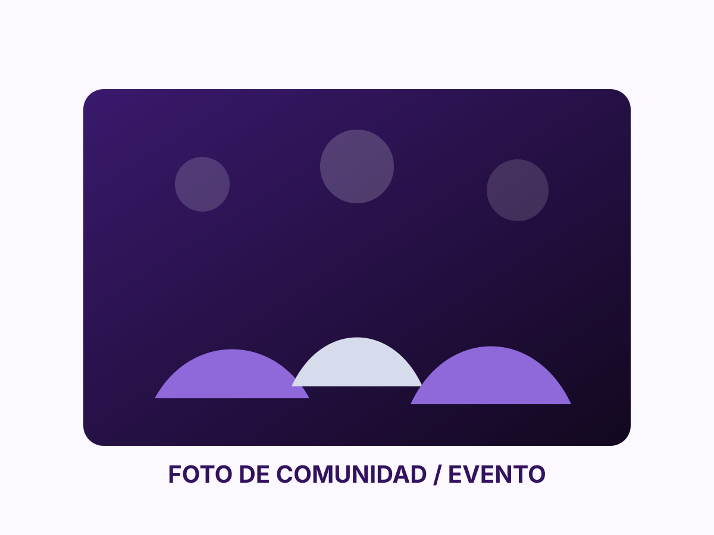

Una marca cercana para artistas jovenes que buscan un primer entorno serio.
Discografica y plataforma para talento emergente
Tu musica merece una primera oportunidad seria.
PowerRecords acompana a artistas jovenes en sus primeras etapas con grabacion, orientacion, formacion y estrategia de lanzamiento. Un espacio cercano para desarrollar talento, ordenar cada paso y empezar a construir una carrera con criterio.
- Grabacion
- Sesiones pensadas para artistas que necesitan calidad, guia y un primer resultado solido.
- Impulso
- Promocion inicial, presencia digital y acompanamiento para que el lanzamiento no se quede a medias.
- Formacion
- Talleres y mentoria para artistas que quieren mejorar antes y despues de publicar.
No solo grabar un tema: entender el proceso, crecer y llegar mejor preparado al lanzamiento.
Servicios
Todo lo que necesita un artista emergente para empezar con buen pie
PowerRecords combina creacion, orientacion y visibilidad. Cada servicio esta pensado para reducir barreras y dar forma a proyectos que todavia estan en una fase inicial.
Starter Demo
Una primera sesion para escuchar tu propuesta, detectar fortalezas y definir el mejor siguiente paso.
- Revision de demo o idea musical
- Diagnostico inicial del proyecto
- Ruta recomendada de trabajo
Launch Pack
La opcion mas completa para transformar una cancion en una salida mas cuidada y preparada para mostrarse.
- Grabacion y edicion basica
- Material inicial para redes
- Seguimiento del lanzamiento
Talleres Online
Sesiones practicas para aprender a moverse en la industria musical con mas criterio y seguridad.
- Redes para artistas
- Composicion y presencia
- Sesiones en directo
Metodo
Un proceso claro para artistas que estan empezando
Empezar en la musica suele venir acompanado de dudas, improvisacion y falta de referencias. Por eso PowerRecords plantea un recorrido simple, visible y facil de seguir.
1. Escuchamos tu punto de partida
Revisamos tu demo, tu estilo y lo que necesitas ahora: grabar mejor, lanzar con mas orden o ganar confianza antes de dar el siguiente paso.
2. Disenamos una ruta realista
No todos los proyectos necesitan lo mismo. Definimos el servicio adecuado y evitamos que inviertas tiempo o dinero en acciones que todavia no tocan.
3. Acompanamos el lanzamiento
Desde la grabacion hasta la comunicacion inicial, cada fase queda mas clara para que puedas avanzar con una base profesional.
Portal del artista
Seguimiento claro, sin perderte entre mensajes y dudas
Un artista que empieza necesita saber que esta hecho, que falta y que viene despues. Esta zona traduce el acompanamiento en una experiencia ordenada y comprensible.
Proyecto activo
Luna Vertigo
Tu perfil, referencias y primera escucha ya estan revisados.
Martes 28 · 18:30. Definicion de single, pack y calendario.
Grabacion, mezcla inicial y revision con el artista.
Material visual, copies cortos y activacion en redes.
Galeria
Una identidad visual que debe vivir tambien en las imagenes
La fotografia sera decisiva para que la web parezca una marca profesional de verdad. La estructura ya esta preparada para incorporar imagenes del estudio, artistas, talleres y comunidad sin desmontar la pagina.

assets/studio-placeholder.svg por una foto principal del espacio.



Talleres online
Formacion util para artistas que quieren avanzar con mas criterio
Los talleres refuerzan la propuesta de PowerRecords: no solo producir musica, sino ayudar a entender como moverse en la industria y como presentar mejor cada proyecto.
Como lanzar tu primer single
Distribucion, portada, teaser y secuencia minima de publicacion.
Redes para artistas emergentes
TikTok, Instagram y formatos de contenido que si pueden sostenerse con pocos medios.
Canto, composicion y presencia
Sesion base para artistas jovenes que todavia estan definiendo su estilo.
Aplicacion
Cuentanos tu proyecto y te orientamos desde el primer paso
Comparte tu demo, tu situacion actual y lo que te gustaria conseguir. A partir de ahi podremos recomendarte el servicio o el itinerario mas adecuado.